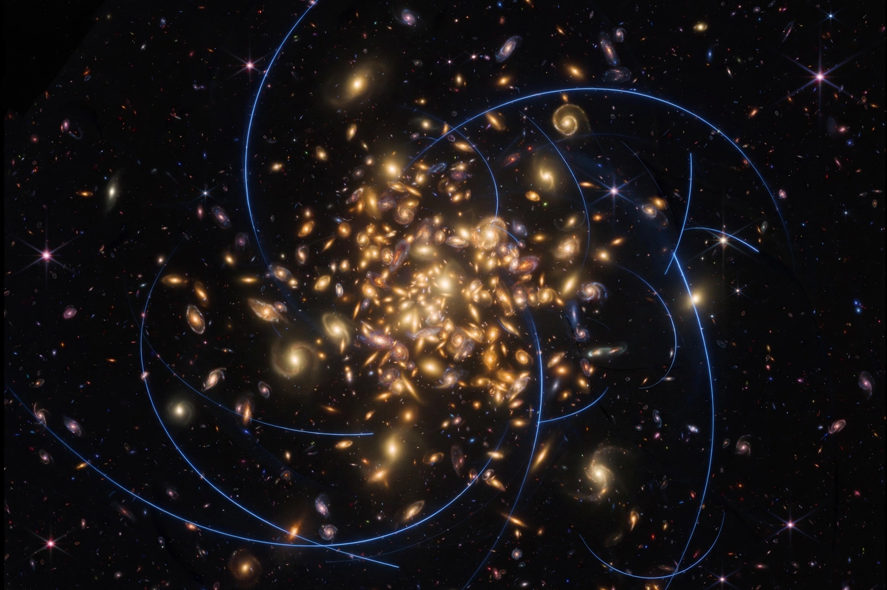

Dark matter

[Image: a gravitational lensing image — a galaxy cluster bending the light of galaxies behind it into blue arcs against black space]Dark matter is a hypothetical form of matter that does not interact with light or other electromagnetic radiation, and is inferred from gravitational effects that cannot be explained by visible matter alone. It is thought to make up about 27% of the universe's total mass–energy and about 85% of its matter. Despite decades of searching, its fundamental nature remains unknown — one of the greatest open problems in physics and Astronomy.
Evidence comes from many independent directions: galaxies rotate too fast for their visible mass, galaxy clusters hold together and bend light more than visible matter allows, and the cosmic microwave background and large-scale structure of the universe match models only if most matter is dark and non-baryonic.
History of the idea
Fritz Zwicky applied the name 'dark matter' (dunkle Materie) in the 1930s to missing mass in the Coma Cluster of galaxies. In the 1970s, Vera Rubin's measurements of galaxy rotation curves showed stars at galactic outskirts orbiting far faster than visible matter could hold, turning dark matter into a central problem of astronomy.
Observations such as the Bullet Cluster (2006), where gravitational lensing shows mass separated from the hot gas that contains most ordinary matter, are widely taken as strong evidence against theories that merely modify gravity.
Candidates and searches
Proposed candidates include WIMPs (weakly interacting massive particles), axions, and sterile neutrinos; none has been directly detected despite sensitive underground experiments (such as LZ and XENONnT) and collider and astrophysical searches. Modified-gravity theories such as MOND attempt to explain some observations without dark matter but struggle with the full range of evidence.
What is ruled out is almost as valuable as a detection: ordinary matter in dark objects (MACHOs) cannot make up the bulk of dark matter, and primordial black holes are constrained to limited mass ranges.